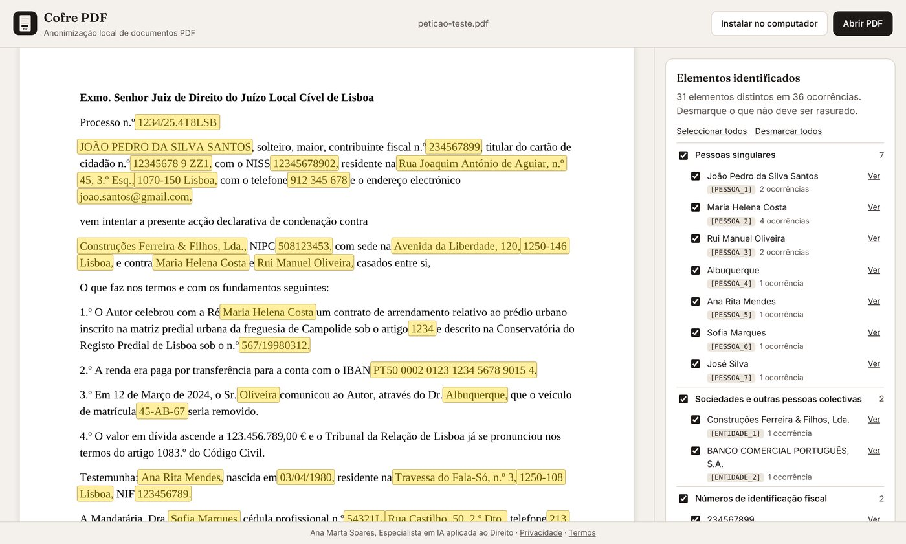

O que faz
Dados identificados
Nomes de pessoas singulares, sociedades e outras pessoas colectivas, NIF e NIPC, cartão de cidadão, NISS, passaporte, cédula profissional, IBAN, correio electrónico, telefone, moradas, códigos postais, matrículas, datas de nascimento, números de processo e identificação matricial e registal de prédios.
Como adquirir e começar a utilizar
130 €
Licença individual, em pagamento único.
- Envie mensagem a Ana Marta Soares no LinkedIn. Após o pagamento, recebe o código de licença, que começa por COFRE-.
- Abra o Cofre PDF no Google Chrome ou no Microsoft Edge e seleccione Instalar no computador.
- Cole o código de licença e seleccione Activar. A activação é feita uma única vez em cada computador.
- Clique com o botão direito num PDF e seleccione Abrir com > Cofre PDF.
Perguntas frequentes
Como anonimizar um PDF com dados pessoais?
Abre-se o PDF no Cofre PDF, revê-se a lista dos dados identificados e selecciona-se Descarregar o PDF anonimizado. O ficheiro gerado substitui os dados por XXXXX e não conserva o texto original.
Porque não basta tapar os dados a preto?
Em muitos PDF, a caixa preta apenas cobre o texto, que continua no ficheiro e pode ser copiado, pesquisado ou lido por ferramentas de inteligência artificial. No Cofre PDF, as páginas são reconstruídas e os dados originais deixam de existir no ficheiro.
O PDF é enviado para algum servidor?
Não. A análise e a substituição decorrem no computador do utilizador. O documento não é transmitido, registado nem conservado.
Funciona com PDF digitalizados?
Os PDF digitalizados não têm texto pesquisável. Nesses casos, as zonas a rasurar são marcadas manualmente, arrastando o rato sobre o documento.
Quanto custa o Cofre PDF?
A licença individual custa 130 €, em pagamento único, e é adquirida a Ana Marta Soares. Após o pagamento, recebe o código de activação.